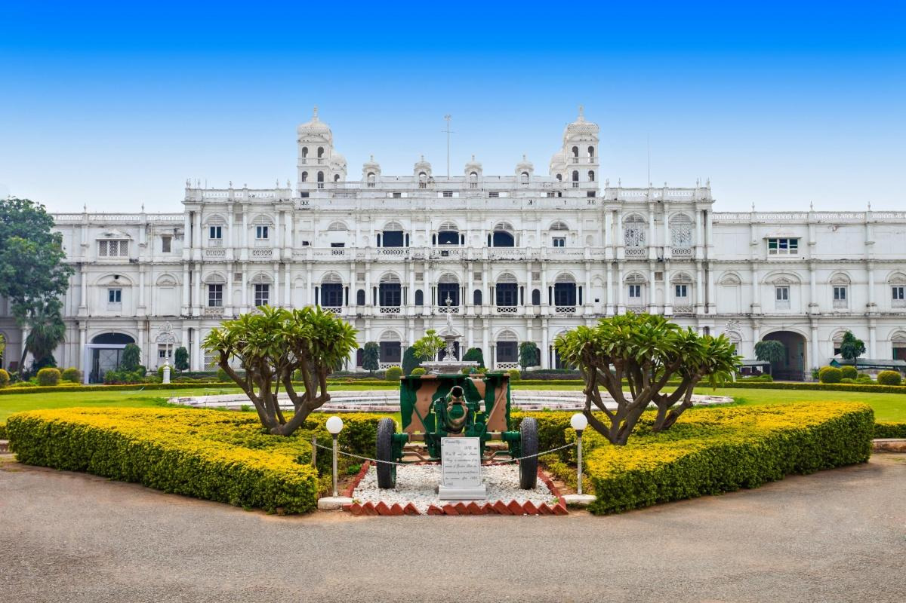
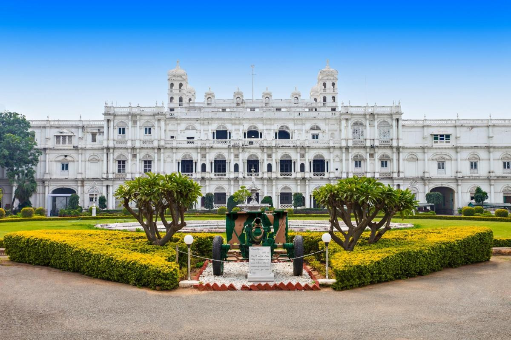

~ The administrative headquarters of Gwalior district and Gwalior division, Gwalior has many administrative offices of the Chambal division of northern Madhya Pradesh. Several administrative and judicial organisations, commissions and boards have their state and national headquarters situated in the city.
~ Gwalior was the winter capital of the state of Madhya Bharat which later became a part of the larger state of Madhya Pradesh. Prior to Indian independence on 15 August 1947, Gwalior remained a princely state of the British Raj with the Scindia as the local rulers. High rocky hills surround the city from all sides, on the north it just forms the border of the Ganga- Yamuna Drainage Basin. The city however is situated in the valley between the hills. Gwalior's metropolitan area includes Gwalior city centre, Morar Cantonment [2] Lashkar Gwalior (Lashkar Subcity), Maharaj Bada, Phool Bagh, Thatipur.

 
